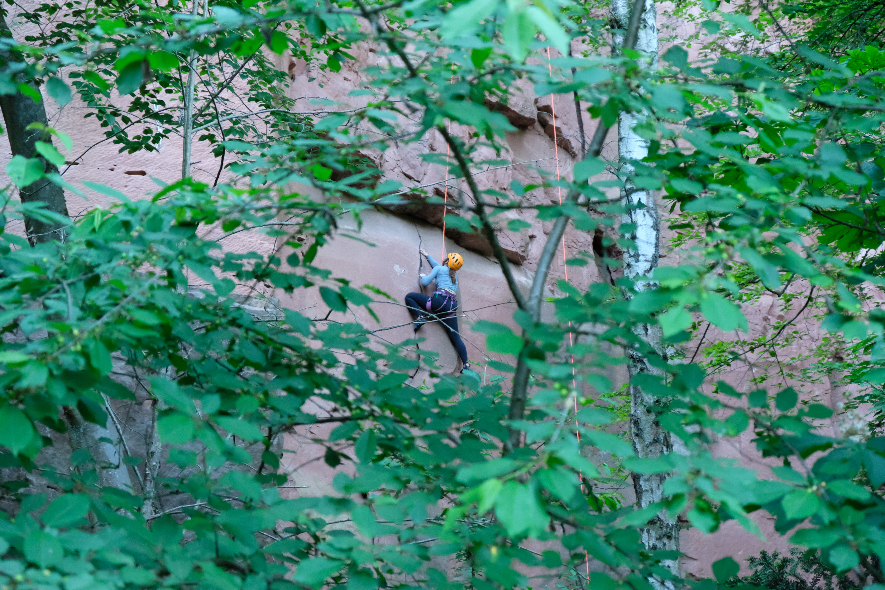
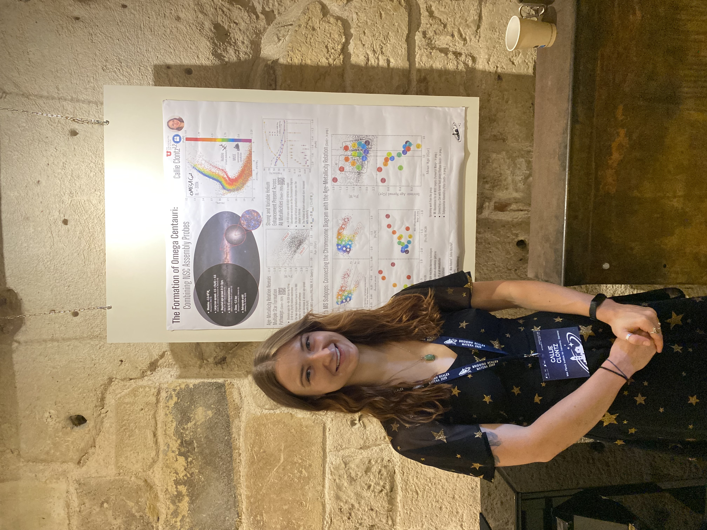
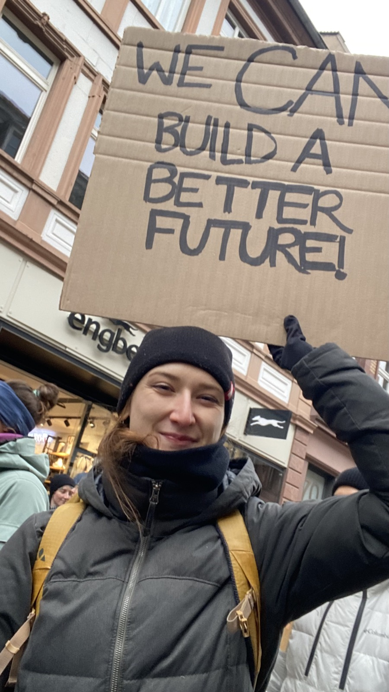
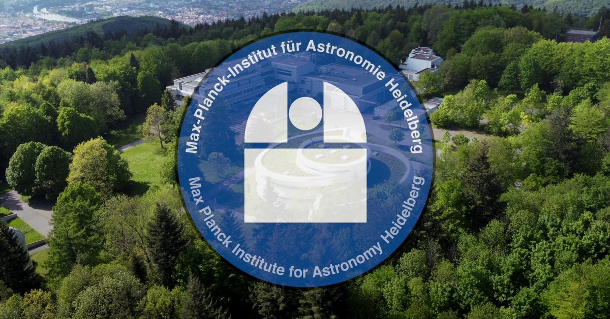
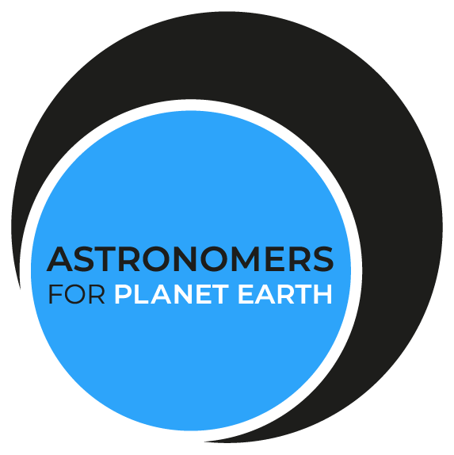

About Me
Origin: North Carolina, USA
Education: After finishing my undergraduate studies in
Physics at at the University of North Carolina at Asheville, I entered a graduate program
at the University of Utah
with a concentration in Astronomy. In August 2022 I moved to Heidelberg, Germany to continue my PhD studies at the
Max Planck Institute for Astronomy. I successfully defended in May 2025 and graduated in August 2025. I now work as a Postdoctoral Researcher
at MPIA and am actively looking for my next position.
Research Interests: My research interests include Nuclear Star Cluster seeding and growth,
the multiple stellar population phenomenon in Globular Clusters, and ultra-high helium abundances.
My works thus far have approached each of these topics through the analysis of the formation of our
Galaxy's largest star cluster, Omega Centauri.
Publications: Find the full ADS list here!
In my free time you will find me studying German, learning QGIS, or enjoying being outdoors (riding my bike, climbing/bouldering, or gardening).

Research

My research focuses on the formation history of our Milky Way's largest and most enigmatic star cluster, Omega Centauri.
This complex star cluster stands out against classical globular clusters in many ways and is thought to be the stripped nuclear star cluster
of one of our galaxy's most recent and impactful mergers. Understanding its seeding and assembly grants us insights into how galactic centers
take shape and gets us closer to unraveling the mystery of the multiple stellar population phenomenon only observed in dense star clusters.
My work utilizes two well-studied probes of nuclear star cluster formation, the age-metallicity relation
and the Chromosome Diagram, to study Omega Centauri.
Abundances of SGB Stars: Connecting the Age-Metallicity Relation with Chemistry

- My current work is analyzing the spectra of 120 subgiant branch stars to combine chemical abundances and ages for stars in Omega Centauri for the first time.
- This will allow us to assert the chemical enrichment environments of the two streams of the age-metallicity relation.
- I proposed, planned, and executed these observations in visitor mode and have also performed all of the data reduction steps myself.
- I have stacked the 6 exposures I have for each star and am now working on measuring stellar parameters and detailed chemical abundances
of around a dozen elements using TSFitPy.
Individual Stellar Population Parsing

- My most recent work (Clontz et al. 2026) made a major step forward by showing the
connection between the two assembly probes, the age-metallicity relation and the Chromosome Diagram, to connect the
P1/1st-generation/unenriched population, the Im/Intermediate/partial enriched population, and P2/2nd-generation/highly enriched population with the two star-formation-tracks of the age-metallicity relation.
- By combining statistical and machine learning methods I assigned subpopulation labels to over 53k stars across our 14 distinct subpopulations.
- I then matched these with the catalog from my 2024 work, assigning ages to >2700 stars and finding mean ages (and age spreads) for each subpopulation.
- I calculated star formation histories for each Chromosome Diagram stream.
Helium Enhancements as a Function of Metallicity

- The ages study focused on the SGB to avoid model complications due to unknown helium abundances, and spectroscopic helium constraints
for individual stars are observationally challenging to obtain.
- Therefore, in my second PhD work (Clontz et al. 2025), I focused on the helium enhancement between the P1 (primoridial)
population and the P2 (hot-hydrogen-burning polluted) populations on the red-giant branch in Omega Centauri to better
constrain its enhancement as a function of metallicity.
- I found that the enriched population exhibits a rapid increase in helium enhancement until [Fe/H] ~ -1.9, after which the relationship is flat at Delta Y = 0.154.
- This signals a change in the efficiency of helium production and a major shift in the mode of stellar evolution of the highly enriched population.
- Delta Y = 0.15 indicates a total helium mass fraction of Y = 0.40 for the enriched stars which is unprecedented in our Milky Way.
- The polluter source for such high helium abundances is still unknown and is actively under investigation.
- This open question has important implication for star formation and evolution in ultra-high stellar density environments and at high redshift.
Precise Ages of Individual Stars

- In (Clontz et al. 2024), I constrained precise ages for more than 8,000 individual subgiant branch (SGB) stars using updated isochrone models.
- In the age-metallicity relation, I discovered two distinct sequences.
- The tighter, supposedly self-enriching sequence is more metal-poor at a fixed age than the seemingly accreted component,
which is inconsistent with current models of nuclear star cluster (NSC) formation.
- The lack of stars with both age and abundance information makes interpretation difficult.
- To address this gap, I successfully proposed high-resolution spectroscopic observations using FLAMES@VLT for
approximately 120 stars occupying the two streams.
- I executed these observations in visitor mode in April 2025 and the analysis of these data is ongoing (see below).

Activism


MPIA Sustainability Group:
As the primary organizer of the MPIA Sustainability Group (since Summer 2023), I have successfully
- improved bike infrastructure by having a maintenance station installed
- added severeal Bee Hotels to support pollinators on the Königstuhl
- been involved in main building extension decision making
- coordinated 2 climate colloquia by invited speakers
- provided resources for environmentally conscious business travel to research groups
- Check out our webpage here!

Astronomers for Planet Earth:
- "Astronomers for Planet Earth (A4E) is an international grass-roots movement of astronomy students, educators,
amateurs and scientists, working to address The Climate Crisis from an astronomical perspective."
- I am an active member of the organization since May 2023, when I helped co-found the German Chapter of the affiliated NGO.
- I am also a member of the Steering Committee since May 2025.
- Check out our webpage here!
Contact
Email: cjclontz@gmail.com